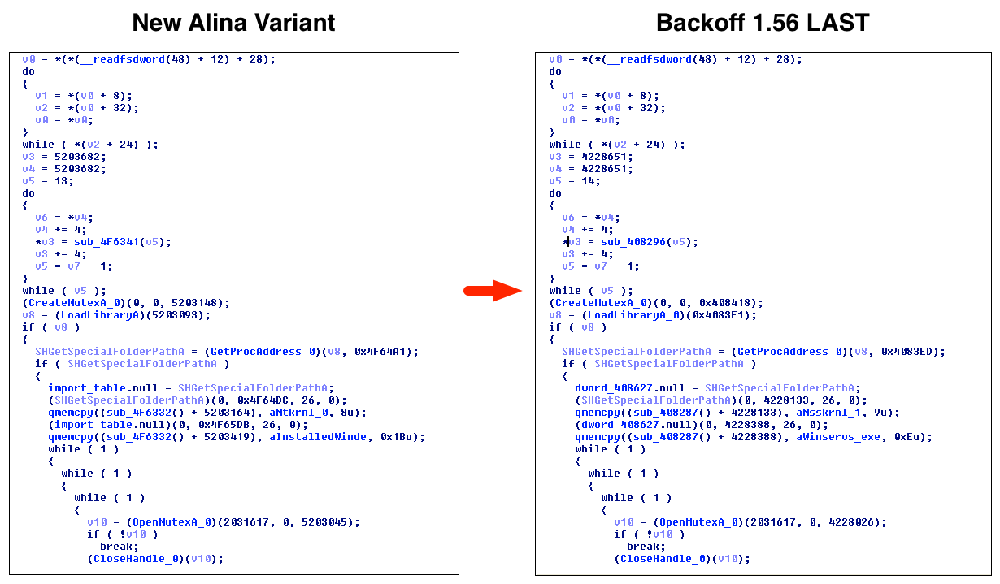

- on Mon 12 January 2015
I've discussed Alina quite a bit in the past. Back when I worked at SpiderLabs, I did a full evolution analysis. More recently, I wrote about a newer variant. I've recently stumbled on a new sample and decided to spend a few hours off the clock towards analysis. For this blog post, I'm going to be referring to this sample.
Some of the strings found within the sample clearly show that this sample is Alina.
{[!11!]}{[!4!]}
{[!12!]}{[!10!]}http://%s:%d{[!4!]}
HTTP/1.1
POST
{[!13!]}{[!4!]}
Accept: application/octet-stream
Content-Type: application/octet-stream
Connection: close
{[!14!]}{[!4!]}
{[!15!]}{[!4!]}
%%%02x
vector<T> too long
map/set<T> too long
{[!16!]}{[!46!]}%s (%d)
{[!46!]}%d{[!1!]}
Unknown::
cards
card
Upon closer inspection, we see the pipe name that is commonly associated with the Spark variant.
\\.\pipe\spark
However, we don't see the user-agent (UA) associated with Spark. Historically, this UA has been 'Mozilla/4.0 (compatible; MSIE 7.0; Windows NT 5.1; InfoPath.1 Spark v1.1'. However, in this particular sample, we see the more generic 'Mozilla/4.0 (compatible; MSIE 7.0; Windows NT 5.1; InfoPath.1.2' UA being used. Due to the named pipe being used, I'm going to venture a guess that this particular sample might be a new Spark variant. Searching for this user-agent also reveals a similar file with the hash of 846efb9df9536eb029184626afd2cd18a9abbeca4b3bfa07c7ab3058af367683 that appears to share characteristics with the sample we're reviewing. Compile timestamp information for the file we're looking at shows a creation time of 2014-05-23. Additionally, this other sample has a compile timestamp of 2014-08-17. This indicates that these files were likely written quite a while ago.
Overall Functionality
Overall, this sample shares a number of characteristics with Alina 5.x. As it appears to be using the Spark codebase, this is understandable. Installation, persistence via the Run registry key, memory scraping, and network communication all appear to be consistent with this version.
Because of this consistency, I'm not going to dig into these details, as they've already been covered previously. However, I will provide IOCs for this particular sample at the end of the blog post.
New Functionality
Unlike previously witnessed versions of Alina, we see some new functionality. One particularly unusual characteristic is the inclusion of a kernel-mode driver that is responsible for hiding the malware's process name (windefender.exe). We can see the assembly for this particular routine below.
As we can see above, the malware is dropping this driver to the %APPDATA%\drv.sys location. This particular tactic for hiding a process is certainly not uncommon. However, this is the first time (as far as I know) that it has been included in the Alina malware family.
Even more unusual, as we continue analysis, we see something very unexpected. Specifically, we see a persistence mechanism that has been witnessed in the popular Backoff malware family. Some of you might remember my analysis from the middle of last year. As you might recall, Backoff had an interesting persistence mechanism where it would inject a function into explorer.exe. This injected stub would then monitor the infected machine and would start a new instance of the malware in the event it discovered the malware was not running. Based on analysis of this new Alina sample, it would appear as though the author has used 100% of this code from Backoff.

This is extremely interesting because it ties the author of Alina with the author of Backoff, due to the fact that the Backoff code source is not publicly available. It grows increasingly interesting when you take into account a previous analysis I wrote up regarding ties between Backoff and Dexter. Additionally, the compile timestamp of 2014-05-23 also provide an interesting insight, as this overlaps with the time period Backoff was being actively developed.
Conclusions
Overall, I think you'll agree that this is a very interesting sample for a number of reasons. Certainly the evolution of Spark is noteworthy. However, the connections between Backoff and Alina in my opinion make for the most interesting point. It's not the first time we've seen overlap between point of sale malware families, and I doubt it will be the last. That being said, these ties between arguably the three most popular malware families in this space is certainly curious.
Indicators of Compromise
MD5: 7644F88C2DAE396E4288E4A9F6E2247D
SHA1: 6A7A71BF199A1BDB40564E00C7F16F858A7D064A
SHA256: 1FABBD3D6FB5BF868EF07BE4774649C4DD3F90959EF1E4477EDD08F96DE47F03
Install Path: %APPDATA%\Installed\windefender.exe
Mutexes: 7YhngylKo09H (Main Executable), SHELLCODE_MUTEX (explorer.exe Injected Stub)
Files Written: %APPDATA%\Installed\windefender.exe, %APPDATA%\nsskrnl, %APPDATA%\winserv.exe, %APPDATA%\drv.sys (Alternatively possibly C:\drv.sys)
Registry Keys: HKCU\Software\Microsoft\Windows\CurrentVersion\Run\windefender, HKCU\SOFTWARE\Microsoft\Windows\CurrentVersion\identifier
User-Agent: Mozilla/4.0 (compatible; MSIE 7.0; Windows NT 5.1; InfoPath.1.2
URL(s): adobeflasherup1[.]com/wordpress/post.php, javaoracle2[.]ru/wordpress/post.php